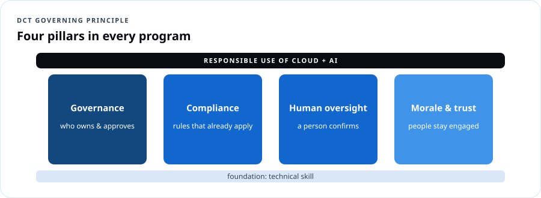
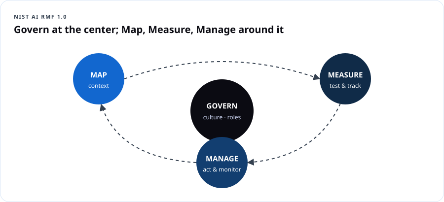

AI Security & Responsible AI Governance
Course overview
Most AI training stops at "how does the tool work." That leaves the gap where real incidents happen: leaked records, biased decisions, unchecked automation, and tools quietly making calls nobody agreed to. DCT closes that gap. Every module pairs a technical skill with a governance question: not just "can we automate this," but "should we, who signs off, and how do we prove it later."
The four pillars

| Pillar | Question it answers |
|---|---|
| Governance | Who owns the decision, who approves it, and where is the policy written down? |
| Compliance | Which rules already apply — privacy, records retention, procurement, sector laws? |
| Human oversight | Where does a person confirm the system got it right before it affects someone's life? |
| Morale & trust | Do our people understand what's changing, and do they feel heard rather than replaced? |
The five questions DCT brings into every room
- What is this tool allowed to touch, and what is permanently off-limits?
- Who reviews the output before it reaches a resident, student, patient or customer?
- How do we document the decision so it holds up under audit or a public records request?
- What is the rollback plan if the system gets it wrong?
- How do we tell our own people what's changing before they hear it secondhand?
Two tracks
| Track | For | Adds |
|---|---|---|
| Community (10 h) | Leaders, educators, small business, nonprofits | Policies, checklists, tabletop exercises — no technical labs |
| Practitioner (16 h) | IT, security, developers, data teams | Threat modeling, red-team prompts, content safety, monitoring labs in Microsoft Foundry and Purview |
Learning outcomes
- Apply the NIST AI Risk Management Framework (Govern, Map, Measure, Manage) to a real use case.
- Classify an AI use by risk and decide the right level of human oversight.
- Identify the OWASP Top 10 risks for LLM applications and agents, and their mitigations.
- Write an acceptable-use policy and a one-page AI use-case record.
- Set data boundaries and implement controls (DLP, content filters, prompt shields, least-privilege tools).
- Run an AI incident tabletop and a rollback.
- Lead the change conversation with staff.
Module 1 — Understand: AI risk in plain language
1.1 Where AI risk comes from
| Source | Example |
|---|---|
| Data | Staff paste case files into an unapproved chatbot |
| Model | Confident wrong answers (hallucinations); biased outputs |
| Prompting | Jailbreaks; hidden instructions in a document (prompt injection) |
| Integration | An agent with permission to email or delete records |
| People & process | No owner, no review, no record of decisions |
Dope Translation: AI is a new hire who's brilliant, fast, never sleeps — and will confidently do exactly what a stranger's sticky note tells it to if you don't train it otherwise. You'd never give a new hire the vault code on day one. Same rule.
1.2 The NIST AI Risk Management Framework (AI RMF 1.0)

| Function | Plain meaning | Example artifact |
|---|---|---|
| Govern | Culture, policies, roles, accountability — applies across everything | AI policy, AI owner named, approval process |
| Map | Understand context: purpose, users, impacts, data | Use-case record, stakeholder list |
| Measure | Test and track risks: accuracy, bias, security, privacy | Evaluation results, red-team log |
| Manage | Prioritize and act: mitigate, accept, transfer, or stop | Risk register, monitoring plan, rollback plan |
NIST also publishes a Generative AI Profile (NIST AI 600-1) describing risks unique to generative AI (confabulation, information integrity, data privacy, harmful content, IP, value chain).
1.3 Risk tiers — how much oversight?
| Tier | Example | Oversight |
|---|---|---|
| Low | Drafting a newsletter, brainstorming class activities | Human edits before publishing |
| Medium | Summarizing public meeting notes, first-draft responses to resident emails | Human reviews every output; sampling audits |
| High | Anything affecting eligibility, benefits, grades, discipline, hiring, health, housing, policing, legal status | Human makes the decision; AI only assists; documented review; bias testing; appeal path — or don't automate at all |
| Prohibited (by your policy) | Fully automated denial of services; covert surveillance; generating deceptive content | Not allowed |
Real Talk: "We can automate it" is a technical statement. "We should automate it" is a governance decision. When a decision changes someone's life, the human isn't a rubber stamp — the human is the decision-maker.
Try it first. Move forward with confidence.
Contact DCT for organizational pricing
Choose a class or cohort that fits your starting point.
Workshop series for agencies, schools, small businesses and nonprofits · live virtual or on-site
Ask about enrollmentAlready enrolled? Check your course accessThis page includes the course overview, one sample lesson and up to three practice questions. Remaining lessons, labs, capstone and the full practice bank are reserved for enrolled learners. Microsoft exam fees are separate where shown. Cohort dates and included support are confirmed before enrollment.